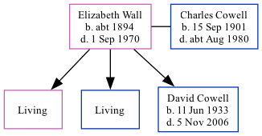

Elizabeth Cowell (née Wall) c1894 - 1970
[ Home ] | [ Calendar ] | [ Surnames Index ] | [ Family History ], Elizabeth Wall, the wife of Charles John Cowell (the first cousin once-removed on the mother's side of Nigel Horne), was born in Kent, England c. 18941 and married Charles (a tin smith with whom she had 3 children: Joyce Elizabeth, Maurice J and David Frank, along with 2 surviving children) in Tooting, London, England on Jan 20, 19242. On Apr 2, 1911, she lived at Nutwell Street, Wandsworth, London1.
She died on Sep 1, 1970.
Children
- David Frank was born on Jun 11, 1933
Citations
- 1911 Census for England & Wales - Findmypast (was age 17 and the daughter of the head of the household)
- London, England; London Metropolitan Archives; Church of England Parish Registers, 1754-1921; Reference Number: P95/NIC/026
Media
England & Wales marriages 1837-2005 - BMD/M/1924/1/AZ/000852/045
1911 Census for England & Wales - GBC/1911/RG14/02361/0381/3
Family Tree
Generated by Ged2Site. Last updated on Jul 20, 2025